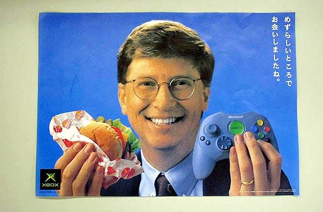
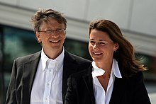

Bill Gates

- Angol, német, skót-ír származású
- Két testvére van, nővére, Kristiane 1954 januárjában, húga, Libby 1964 júniusában született
- Fiatalon családjával rendszeresen jártak protestáns gyülekezetekbe
- Énekelt a kórusban, részt vett a cserkészmozgalomban is
A Microsoft cég alapítójaként és tulajdonosaként Bill Gates fontos szerepet játszott a 20. század végén felvirágzó mikroszámítógép-ipar történetében, olyan széles körben elterjedt szoftverek fűződnek a nevéhez, mint az MS-DOS vagy a Microsoft Windows. A cég vezérigazgatói posztjáról 2000-ben, az elnöki pozícióról 2014-ben köszönt le, tanácsadóként tevékenykedik a cég jelenlegi igazgatója, Satya Nadella mellett.

Fiatalon
Gates már nyolcadikos korában programozni tanult, BASIC nyelven, amely tevékenységet lenyűgözőnek találta. Első programja egy amőbajáték volt.
Gates egyetemi tanulmányait a Harvard Egyetemen kezdte meg, matematika szakon, 1974-ben, itt ismerkedett meg Steve Ballmerrel, a Microsoft egyik későbbi vezérigazgatójával. Tanulmányai nem kötötték le, 1976-ban a halasztás mellett döntött. Később sem szerzett diplomát.
Magánélete
Házassága
Felesége Melinda Gates, akitől 3 gyermeke született: Jennifer, Rory és Phoebe. 1994-ben házasodtak össze. 1987-ben kezdett dolgozni a Microsoftnál, itt ismerkedett meg Gatesszel.
Nagy szerepe volt abban, hogy Bill Gates figyelme a jótékonykodás felé fordult. 2021 májusában a Twitteren jelentették be, hogy az alapítványt közösen folytatják, de már nem egy párként.
Bill Gates és felesége, Melinda 2000-ben hozta létre a Bill és Melinda Gates alapítványt. Gates korábban is támogatott különféle seattle-i jótékonysági szervezeteket, iskolákat, a Harvard Egyetem Számítástechnika tanszékét, de az alapítvány létrehozása után ez a tevékenység nagyobb méreteket öltött.
- 2003-ban Indiában AIDS-ellenes kutatásokat támogatott az alapítvány, illetve malária-ellenes vakcinák kifejlesztésére fordítottak 258 millió dollárt
- 2006-ban az alapítvány három alappillérre helyezte tevékenységét, melyek a globális egészségügy, a globális fejlődés, illetve az Egyesült Államokban tapasztalható munkanélküliség csökkentése
- Bill Gates 2012-ig 28 milliárd dollárt költött jótékonyságra
- 2008-ban felhagyott a Microsoft-beli napi munkával, hogy minél több időt tudjon jótékonysági tevékenységére fordítani
Lovagi címe
Bill Gates 2005. március 2-án lovagi címet kapott II. Erzsébet brit királynőtől, elsősorban jótékonysági tevékenységének elismeréseként. Mivel nem birodalmi alattvaló, nevében a Sir előtag helyett a KBE utótagot használhatja (Knight Commander of the Order of the British Empire). Az elismerésre az Egyesült Királyság akkori pénzügyminisztere, Gordon Brown terjesztette fel.